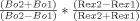

Characterizing and controlling the inherent dynamics of cyclophilin‐A
Check UMLinks for fulltextAbstract
With the recent advances in NMR relaxation techniques, protein motions on functionally important timescales can be studied at atomic resolution. Here, we have used NMR‐based relaxation experiments at several temperatures and both 600 and 900 MHz to characterize the inherent dynamics of the enzyme cyclophilin‐A (CypA). We have discovered multiple chemical exchange processes within the enzyme that form a “dynamic continuum” that spans 20–30 Å comprising active site residues and residues proximal to the active site. By combining mutagenesis with these NMR relaxation techniques, a simple method of counting the dynamically sampled conformations has been developed. Surprisingly, a combination of point mutations has allowed for the specific regulation of many of the exchange processes that occur within CypA, suggesting that the dynamics of an enzyme may be engineered.
Introduction
Although our understanding of protein sequence and structure has grown exponentially within the last 20 years, the role of dynamics in protein function has only recently begun to be studied at atomic resolution. Advancements in NMR relaxation experiments that probe protein motions on the micro‐millisecond (μs‐ms) timescale have allowed us to begin studying a diverse array of dynamic functions that include disulfide isomerization,1 protein folding,2-5 metal binding,6 and the dynamics associated with enzyme conformational changes.7-9 Enzymes are at the forefront of understanding the relationship between protein dynamics, sequence, structure, and function, since they are dependent on μs‐ms conformational changes for catalysis. New innovative approaches that utilize these recent experimental techniques will allow us to go beyond the static structural descriptions of enzymes to help understand how dynamics have been evolutionarily selected for function.
Motions on the μs‐ms timescale have been detected both in the presence and absence of substrates within many of the enzymes studied to date, implying that inherent flexibility is important for function.10 Although the details of these motions are altered by the substrates, they localize to similar regions, and are on similar timescales as catalysis. For example, both free RNaseA11-13 and free cyclophilin‐A (CypA)8, 14 exhibit conformational exchange rates on the order of 1000–3000 s−1 that are similar to their rates of turnover. Such similar rates may also suggest that conformational rearrangements in the free enzymes are similar to those during catalysis, yet this has not been directly shown. For CypA that is the enzyme under study here, a clear understanding as to how these inherent movements may be correlated and how they compare with catalysis remains unclear.
CypA catalyzes the reversible isomerization of peptidyl‐prolyl bonds (i.e. cis/trans isomerization) and plays multiple biological roles that include protein folding and signal transduction.15 CypA is also involved in multiple diseases including cancer, inflammatory disorders, and viral infections.16, 17 Thus, there has been great interest in designing inhibitors to block the detrimental roles of CypA during disease progression18, 19 and an understanding of its dynamic behavior may augment rational based approaches. Here, we have used mutagenesis together with several NMR methods aimed at probing protein motions at both multiple temperatures and multiple static field strengths to characterize the inherent dynamics of CypA.
We have discovered that much more of CypA undergoes exchange than previously thought8, 14 and that multiple exchange processes occur within the enzyme that form a “dynamic continuum” at higher temperatures. These exchange events range from relatively fast motions on one side of the protein to much slower motions on the other side and the associated exchange rates vary by approximately six‐fold. Through mutagenesis we have developed a methodology that has allowed us to “count” the number of dynamically sampled conformations for many residues and specifically control the dynamics of an entire region of CypA. Our studies suggest that much of CypA undergoes a dominant two‐site exchange. To our knowledge, this is the first report that has employed mutagenesis to selectively control the dynamics of a protein by combining point mutations in a rational‐based manner. Such findings may have powerful implications in the future engineering of enzymes with both dynamic and functional attributes.
Results
Combining higher static field strengths, lower temperatures, and deuteration, reveal that nearly half of CypA undergoes chemical exchange
For free CypA, previous R2‐CPMG experiments performed at 600 MHz and 10°C identified less than 30 residues undergoing chemical exchange.8, 14 However, the quality of data for many of these residues made it difficult to reliably characterize their motions. Thus, we have now combined deuteration with the highest field strength currently commercially available, 900 MHz, to more thoroughly probe the inherent dynamics of CypA. Deuteration increases the sensitivity of chemical exchange by in part lowering the apparent R2° and higher field strengths allow for the detection of residues exhibiting very small chemical shift changes to be identified as shown by the quadratic field dependence in Eq. (1).
Using 15N‐R2‐CPMG relaxation dispersion measurements on 2H,15N‐CypA (referred to as R2‐CPMG for the simplicity), 75 amides that represent nearly half of the residues within CypA give rise to measurable exchange over 0.5 s−1 at 900 MHz and 0°C [Fig. 1(A), Supporting Information Table S1]. This is in comparison with the 48 residues at 10°C and 40 residues at 20°C that are all considerably more than the number detected previously at 10°C and 600 MHz using 15N‐labeling alone.8 The vast majority of residues exhibiting chemical exchange are relegated to the active site and include the catalytic residue R55. On the basis of the co‐crystal structure complexes, the guanidino side chain of R55 has previously been proposed to weaken the double‐bond character of prolyl‐peptide bonds24, 25 and in accord with this, we have previously shown that R55 exhibits chemical exchange during catalysis of a model peptide substrate.8, 14 However, this is the first report to directly measure the exchange of this residue in the free wild‐type enzyme and directly show that its exchange rate is similar to the catalytic rate during turnover (see below).
Free CypA undergoes exchange on multiple chemical shift timescales. (A) Nearly half of CypA exhibits chemical exchange contributions (cyan) above 0.5 s−1 (Supporting Information Table S1). (B) The static magnetic field dependence of chemical exchange is used to calculate α at 20°C, 10°C and 0°C from Supporting Information Table S2.23 R2‐CPMG dispersion is shown at 600 MHz (dashed lines, ▪) and 900 MHz (straight lines, •) for R55 and L122. Dispersion curves for L122 at 10°C and 0°C exhibit no static field dependence (i.e. α = 0) and thus, the absolute R2eff is shown for clarity to avoid overlap of their calculated fits. (C) The temperature dependence of Rex is shown for these same residues and is in good agreement with the static magnetic field dependence. Rex increases with lower temperatures for R55 and decreases for L122, indicating fast exchange and slow exchange, respectively.1 Data were collected at 20°C (orange), 10°C (blue), and 0°C (cyan). [Color figure can be viewed in the online issue, which is available at www.interscience.wiley.com.]
The chemical shift timescales of CypA exchange as probed by both the static field dependence and temperature dependence of R2‐CPMG dispersion
Identifying the timescale of chemical exchange for each residue of a macromolecule is critical for several reasons. First, in the limit of very slow exchange R2‐CPMG dispersion data are poorly described by the Carver–Richards equation, requiring the use of a “slow exchange equation” described later for some of these exchanging residues.3 Thus, it is important to know the chemical shift timescale to apply the correct analysis to R2‐CPMG dispersion data. Second, while a single dynamic process can include residues that exchange on multiple chemical shift timescales, identifying these timescales may provide insight as to the explicit structural changes involved. For example, large chemical shifts may suggest that the structural changes involve aromatic residues.
There are several methods that can probe the chemical shift timescale of exchange. Palmer and coworkers have shown that the timescale of exchange can be measured as a function of the static magnetic field and can be quantitatively described by the parameter called alpha (i.e. the α‐factor).23 This parameter is defined as α =  where Bo2 and Bo1 represent the static magnetic fields, 600 and 900 MHz, respectively, used in this study, and Rex the associated exchange contributions at each field. In the limit of slow exchange, there is no dependence on field strength for the chemical exchange contribution and α is between 0 and 1. In the limit of fast exchange, there is a quadratic dependence on the static field for the exchange contribution and α is between 1 and 2. The temperature dependence of chemical exchange can also be used to define the chemical shift timescale.1 Specifically, the temperature dependence is completely opposite for the case of slow exchange versus that of fast exchange, with the maximum contribution at intermediate exchange (i.e. coalescence, kex = Δω for a system undergoing a two‐site exchange). Thus, both the static field dependence and temperature have been used to define the timescale of chemical exchange exhibited by residues within CypA.
A comparison of R2‐CPMG dispersion between 600 and 900 MHz reveals that CypA undergoes exchange on multiple chemical shift timescales, which is in contrast to previous investigations that had assumed all residues undergo fast exchange.8, 14 The calculated α‐factors are shown in Supporting Information Table S2 for those residues that exhibit measurable exchange at both static field strengths and examples are shown for R55 and L122 [Fig. 1(B)]. Most residues, such as the catalytic residue R55, exhibit intermediate‐fast exchange at all temperatures [Fig. 1(B), left]. In contrast, residues within the 3,10‐α‐helix (i.e. residues 119–122) and several neighboring residues to this helix (K91, H92, H126, and V128) exchange on the intermediate‐slow timescale of chemical exchange at 20°C and are at the slow‐exchange limit at 10°C and 0°C. Such slow exchange is immediately apparent in the sinusoidal behavior of their exchange contributions at the lower νcpmg fields imparted [e.g., L122 at 0°C in Fig. 1(B), right]. These static magnetic field comparisons are in good agreement with the temperature dependence of these residues, as shown for R55 and L122 [Fig. 1(C)]. Here, exchange decreases with decreasing temperature for L122 and increases with decreasing temperature for R55 as predicted for residues undergoing slow and fast exchange, respectively.1 Interestingly, several sequential residues exhibit exchange on different timescales and this may suggest that the exchange events monitored are associated with very localized structural changes. For example, sequential residues that comprise the β‐sheet within the core of the enzyme, such as residues 55,56 and 62,63, exchange on multiple timescales at both 20°C and 10°C (Supporting Information Table S2). Interestingly, from 10°C to 0°C several of these core residues exhibit a transition from slow to fast exchange on the chemical shift timescale that may seem counterintuitive at first. However, the actual exchange rates themselves do not increase at the lower temperatures, but simply the exchange rates relative to the chemical shift differences in sampled states increase (i.e. kex > Δω). Thus, the absolute value of Δω decreases at 0°C for several chemical exchange events and may suggest that some of the associated conformational changes have been “frozen out.” For example, several of the 22 aromatic residues that are concentrated within the core of CypA may exhibit a reduction in ring flipping at 0°C.
Multiple dynamic processes occur within CypA at a single temperature and many of the exchange processes exhibit different temperature dependencies
Although earlier we have shown that residues within free CypA exhibit a wide range in chemical exchange on the chemical shift timescale (i.e. kex relative to Δω, kex/Δω, varies for each residue), here we show that residues within free CypA also exhibit a wide range in the absolute exchange rates themselves. Using R2‐CPMG dispersion measured at both 600 and 900 MHz, amide dispersion curves were independently calculated for each residue. The use of two static field strengths increases the accuracy of calculated parameters derived from R2‐CPMG dramatically, with additional fields shown to have much less of an effect.26 At 20°C, residues within free CypA exhibit approximately a six‐fold difference in their extracted exchange rates, ranging from a calculated ∼6000 s−1 on one side of CypA to ∼1000 s−1 on the opposite side of the enzyme [Fig. 2(A)]. Such different exchange processes are immediately apparent in the fit dispersion curves themselves [Fig. 2(B)] and appear to form a “dynamic continuum” at this temperature. For example, at 20°C, exchange is so fast for most residues comprising the loop region of residues 65–84 and neighboring residues 110–111 that the R2‐CPMG dispersion curves are linear. In contrast, residues 119–122 that comprise a short 3,10‐helix and several residues that lay immediately adjacent to this region (K91, H92, H126, and V128) exhibit much slower exchange. For this region the exchange contributions are essentially suppressed at the highest refocusing field applied (νCPMG = 1000 Hz).
The chemical exchange of CypA represents a dynamic continuum. (A) R2‐CPMG derived chemical exchange rates, kex, are shown on a continuous scale from purple‐to‐green‐to‐red representing an increase from 1000 s−1 (purple) to nearly 6000 s−1 (red) at 20°C. (B) R2‐CPMG dispersions are shown at both 600 MHz (dashed line, ▪) and 900 MHz (straight line, •) for several residues within CypA demonstrating a dynamic continuum at 20°C. [Color figure can be viewed in the online issue, which is available at www.interscience.wiley.com.]
CypA residues undergoing different exchange rates at 20°C also exhibit different temperature dependencies, confirming that the enzyme undergoes multiple exchange processes on the μs‐ms timescale (Fig. 3 and Table I). R2‐CPMG dispersion collected at three temperatures (0, 10, and 20°C) and two static magnetic fields (600 and 900 MHz) reveal that many of the core residues of CypA exhibit the least temperature dependence. These core residues primarily comprise β‐strands at the bottom of the active site such as W113 [Fig. 3(B), middle panels]. In contrast, both the faster and slower exchanging residues at 20°C described earlier do slow down considerably with temperature as exemplified by I78 and T119, respectively [Fig. 3(B), left and right panels].
| Residue | 0°C | 10°C | 20°C |
|---|---|---|---|
| 48 | 1456 ± 370 | ||
| 55 | 1159 ± 150 | 1176 ± 200 | 1584 ± 340 |
| 56 | 1070 ± 160 | 1239 ± 400 | |
| 57 | 1511 ± 360 | ||
| 61 | 1354 ± 350 | ||
| 62 | 1534 ± 180 | 1542 ± 300 | |
| 63 | 1456 ± 340 | 2417 ± 460 | 1957 ± 310 |
| 65 | 811 ± 200 | 2129 ± 400 | 5114 ± 1000 |
| 66 | 559 ± 180 | 2849 ± 230 | 5452 ± 1000 |
| 67 | 189 ± 260 | 3628 ± 450 | 4193 ± 1000 |
| 68 | 934 ± 350 | ||
| 69 | 725 ± 400 | ||
| 72 | 1200 ± 300 | 5794 ± 2800 | |
| 73 | |||
| 74 | 3666 ± 350 | ||
| 75 | 748 ± 170 | ||
| 76 | 956 ± 100 | 2578 ± 120 | 5326 ± 1000 |
| 77 | 562 ± 150 | 2558 ± 160 | 5490 ± 1000 |
| 82 | 1070 ± 120 | O.L. | 2240 ± 250 |
| 83 | 633 ± 100 | 2610 ± 280 | 5201 ± 1000 |
| 84 | 1200 ± 400 | ||
| 91 | kA = 0.54 ± 0.07aa
Only the forward rate constant, kA, could be extracted due to slow exchange (see text). Both kA and the respective uncertainties were calculated using the “slow exchange equation” described in Materials and Methods.
|
kA = 0.85 ± 0.18aa
Only the forward rate constant, kA, could be extracted due to slow exchange (see text). Both kA and the respective uncertainties were calculated using the “slow exchange equation” described in Materials and Methods.
|
960 ± 200 |
| 92 | kA = 1.64 ± 0.15aa
Only the forward rate constant, kA, could be extracted due to slow exchange (see text). Both kA and the respective uncertainties were calculated using the “slow exchange equation” described in Materials and Methods.
|
kA = 2.15 ± 0.11aa
Only the forward rate constant, kA, could be extracted due to slow exchange (see text). Both kA and the respective uncertainties were calculated using the “slow exchange equation” described in Materials and Methods.
|
1072 ± 200 |
| 96 | kA = 1.01 ± 0.11aa
Only the forward rate constant, kA, could be extracted due to slow exchange (see text). Both kA and the respective uncertainties were calculated using the “slow exchange equation” described in Materials and Methods.
|
kA = 0.9 ± 0.15aa
Only the forward rate constant, kA, could be extracted due to slow exchange (see text). Both kA and the respective uncertainties were calculated using the “slow exchange equation” described in Materials and Methods.
|
1351 ± 250 |
| 98 | 1159 ± 200 | 2130 ± 400 | 1031 ± 300 |
| 99 | 460 ± 100 | 400 ± 100 | 1320 ± 100 |
| 102 | 1511 ± 150 | 1524 ± 400 | 1750 ± 100 |
| 109 | 1269 ± 150 | 3041 ± 1000 | 1700 ± 600 |
| 110 | 684 ± 120 | 3142 ± 500 | 5800 ± 1000 |
| 111 | 1008 ± 100 | 2737 ± 200 | 4864 ± 1500 |
| 113 | 950 ± 100 | 1400 ± 200 | 1400 ± 100 |
| 119 | kA = 1.84 ± 0.14aa
Only the forward rate constant, kA, could be extracted due to slow exchange (see text). Both kA and the respective uncertainties were calculated using the “slow exchange equation” described in Materials and Methods.
|
kA = 1.41 ± 0.08aa
Only the forward rate constant, kA, could be extracted due to slow exchange (see text). Both kA and the respective uncertainties were calculated using the “slow exchange equation” described in Materials and Methods.
|
1588 ± 200 |
| 120 | kA = 1.85 ± 0.12aa
Only the forward rate constant, kA, could be extracted due to slow exchange (see text). Both kA and the respective uncertainties were calculated using the “slow exchange equation” described in Materials and Methods.
|
kA = 2.74 ± 0.13aa
Only the forward rate constant, kA, could be extracted due to slow exchange (see text). Both kA and the respective uncertainties were calculated using the “slow exchange equation” described in Materials and Methods.
|
1366 ± 100 |
| 122 | kA = 1.84 ± 0.11aa
Only the forward rate constant, kA, could be extracted due to slow exchange (see text). Both kA and the respective uncertainties were calculated using the “slow exchange equation” described in Materials and Methods.
|
kA = 2.33 ± 0.13aa
Only the forward rate constant, kA, could be extracted due to slow exchange (see text). Both kA and the respective uncertainties were calculated using the “slow exchange equation” described in Materials and Methods.
|
1408 ± 200 |
| 126 | 1453 ± 160 | ||
| 128 | 1038 ± 240 |
- a Only the forward rate constant, kA, could be extracted due to slow exchange (see text). Both kA and the respective uncertainties were calculated using the “slow exchange equation” described in Materials and Methods.
Several chemical exchange processes occur within free CypA. (A) The positions of three residues within CypA that exhibit different temperature dependencies are shown and include T119 (magenta), W113 (green), and I78 (red). (B) The R2‐CPMG dispersion profiles are shown for these same residues at 20°C (orange), 10°C (dark blue), and 0°C (light blue) at both 600 MHz (dashed line, ▪) and 900 MHz (straight line, •). The extracted exchange rates, kex, are shown for each simultaneous fit of the data at both static magnetic fields. For T119 the axis for each field at 0°C and 10°C are offset for 600 MHz (right axis) for clarity since there is no static magnetic field dependence for this residue at these temperatures and their exchange is difficult to see when superimposed. [Color figure can be viewed in the online issue, which is available at www.interscience.wiley.com.]
Several important cautionary notes must be addressed for these individual extracted exchange rates (Table I). First, we have applied a simple two‐site exchange model to describe the measured R2‐CPMG dispersion. Without the preexisting knowledge of a more complicated process there is no apparent reason to employ a more complicated model such as a three‐site exchange. However, later we have sought innovative ways to combine mutagenesis with NMR relaxation measurements to specifically identify how many conformations are explored by the chemical exchange events measured here. Here, we report the total exchange rate (i.e. kex), since the model selection does not drastically affect this value but only the individual microscopic rate constants. Second, for slowly exchanging residues such as residues 119–122, only the forward rate constant (i.e. kA) can be extracted using the slow‐exchange equation at both 0 and 10°C, and this is what is listed in Table I. Third, the individual microscopic rate constants, their associated populations, and the chemical shifts are poorly defined on a per residue basis for residues undergoing fast exchange. Globally fitting residues has been shown to decrease such uncertainties for these parameters, yet, there is no apparent rationale for globally fitting residues within CypA and it is unclear as to which residues should be included in such global fits. In fact, several neighboring residues immediately adjacent to one another, such as S110 and N102 at 20°C (see Fig. 2), exhibit very different exchange rates that argue against completely cooperative exchange within particular regions of CypA.
Counting conformations and probing the dynamic network of CypA using dynamics‐based mutagenesis
If dynamic fluctuations within enzymes have been evolutionarily selected for their catalytic function, then cyclophilins may sample two dominant conformations in the absence of substrates just as they do during peptidyl‐prolyl cis/trans isomerization of substrates. Free cyclophilins would then undergo dynamic fluctuations that sample two dominant conformations similar to their bound conformations of catalyzed substrates. In other words, if inherent motions within CypA correspond to the physical conformations that occur during turnover, then “cis‐like” and “trans‐like” conformations may be sampled for each residue even prior to catalysis. Here, we have begun characterizing the dynamic exchange processes identified earlier by using an approach that combines mutagenesis with relaxation experiments. The primary question that we have sought to address is whether the inherent dynamics of CypA have been explicitly preprogrammed for sampling two conformations or a more complicated exchange process? Such a finding would also validate the use of a simple two‐site model that could be an oversimplification for many dynamic processes.
Mutagenesis is an obvious yet, powerful way to probe protein motions and here we have built on our previous discovery that has shown enzyme dynamics may be altered by the introduction of point mutations.8 Specifically, two point mutations within CypA, R55A (producing CypAR55A), and K82A (producing CypAK82A), were previously found to either decrease or increase the dynamic sampling of a minor population for many residues throughout the enzyme, respectively. R55 is the catalytic residue and K82 is on a loop adjacent to the active site that has not been found to make any direct contact with substrates. The dynamic effects of these mutations were found to impart measurable changes to R2‐CPMG dispersion profiles for residues nearly 20 Å away. Such distal changes could not be explained by local effects (Δω), but rather indicated that these mutations impart global effects to chemical exchange (PA, PB, and kex). Furthermore, each of these mutations was found to produce similar effects on R2‐CPMG dispersions for multiple residues of CypA, either decreasing the amplitudes within R2‐CPMG dispersion profiles for many residues within CypAR55A or increasing such amplitudes for the same residues within CypAK82A. Since mutagenic changes solely to Δω would be expected to be somewhat random, this too suggested that changes were incurred to other phenomena that dictated chemical exchange beyond the local chemical environments. The extracted kex values for these R2‐CPMG dispersions were nearly the same for each residue as their wild‐type counterpart, and thus, global changes in R2‐CPMG amplitudes could only be due to changes in the minor population for each residue (PB). While this was further confirmed by alternative measures of these populations using HSQC/HMQC experiments described later, only a subset of residues could previously be measured.8 Thus, here we have analyzed both of these mutants at higher fields, multiple temperatures and, importantly, we have extended these prior studies to include the double mutation CypAR55A,K82A, which has further contributed to our understanding of these dynamic exchange processes.
The rationale for this double mutation, CypAR55A,K82A, is critical for these studies and is therefore described in the following. For a system undergoing a dominant two‐site exchange, the sampling of a minor population can only be decreased or increased. Thus, when the populations are skewed, as is the case for CypA (i.e. PA ≫ PB),8 a combination of single mutations that each independently either decreases or increases a dynamically sampled minor population (i.e. PB) is expected to be a linear combination of both. This can be directly measured as a contribution to Rex using R2‐CPMG experiments (i.e. amplitude changes). A secondary independent measure of this can also be detected as a chemical shift difference (Ω) between heteronuclear‐single quantum coherence (HSQC) and heteronuclear‐multi‐quantum coherence (HMQC) spectra, referred to herein as H(S/M)QC experiments and further described later. Thus, we have attempted to combine individual point mutations to regulate CypA motions.
CypA residues can broadly be divided into three regions based on their dynamic responses to the individual point mutations, CypAR55A and CypAK82A, and the double mutation CypAR55A,K82A and described herein as regions I, II, and III. Region I exhibits dynamic properties within CypAR55A,K82A that are a linear combination of the individual point mutations while regions II and III do not exhibit such a linear dependence but still differ from each other. The majority of amide resonances within all mutants differ from wild‐type CypA by less than 0.1 ppm as monitored by 15N‐HSQC spectra, indicating the intact global fold remains and large structural changes have not been induced. Only three amides that exhibit chemical exchange are in close proximity to either the mutated side chain of R55 (specifically, I56 and Q63) or K82 (specifically, Y83), yet even these residues exhibit mutagenic‐induced changes to their exchange that is consistent with their neighboring residues suggesting once again that their corresponding amide Δω values were not significantly altered by these mutations. Importantly, the fact that all residues within each region described below exhibit the same mutagenic response implies that the imparted changes are not simply local environmental changes (i.e. chemical shift changes of either sampled state, ωA and ωB), which would be expected to result in a distribution of altered exchange contributions due to altered Δω values. Instead, these mutations must result in dynamic changes to the two remaining variables in Eq. (1) that are either the sampled populations or exchange rates. As the exchange rates are nearly identical for all mutants then the mutagenic changes in chemical exchange are primarily due to their effects on populations. Thus, although we will begin to discuss the changes to chemical exchange as amplitudes in regard to the actual data, the underlying physical changes are due to populations and this is further discussed below. Residues that exhibit a linear response in chemical exchange to mutations (i.e. region I) will be discussed separately from those that do not (i.e. regions II and III).
Residues in which chemical exchange within CypAR55A,K82A is a linear combination of that within CypAR55A and CypAK82A (region I)
Approximately half of the residues with detectable dispersion within the wild‐type CypA exhibit an additive effect to Rex from both of the single mutations within CypAR55A,K82A, as would be predicted for a simple two‐site dynamic exchange process [Fig. 4(A) and Supporting Information Table S3]. Thus, the dynamic exchange that was altered by one mutation has been compensated by the other mutation, resulting in a double mutant that exhibits near wild‐type dynamic properties for this large subset of residues. This region (i.e. region I) includes the loop region adjacent to the active site of residues 65–84, the neighboring loop of residues 110–111, and residues within 29–46 that comprise α‐helix‐1 [Fig. 4(B)]. The exchange of residues 29–44 can only be detected at 0°C that is likely due to small chemical shift differences between sampled states (i.e., Δω). Conversely, several amides within the loop region of residues 65–84 that lay immediately adjacent to the active site are severely linebroadened at 900 MHz, which suggests that these residues exhibit large chemical shift differences between sampled states. As quantifying intensities from severely linebroadened resonances results in large uncertainties for R2‐CPMG dispersion analysis,26 our lower field data at 600 MHz provides a more accurate assessment of dispersion for these residues [Fig. 4(A)]. Finally, this striking example of controlling the exchange contributions for multiple residues (i.e., Rex) by mutagenesis in a specific and measurable manner once again suggests that the imparted changes are not simply local environmental changes (i.e., Δω), but rather real changes to the dynamics of this region. However, there are very likely local chemical shift changes induced by these mutations as well and this could potentially be why changes imparted to chemical exchange for each residue do not increase or decrease exactly the same. Alternatively, since we have shown earlier that residues within each region exhibit different exchange rates this may also imply that the mutations result in somewhat different effects on sampled populations.
The chemical exchange of many residues within CypA exhibit a linear combination of individual point mutations (described as region I). (A) R2‐CPMG dispersion profiles are shown for residues within CypAR55A (green), CypAR55A,K82A (black), wild‐type CypA (blue), and CypAK82A (red). The amplitudes of R2‐CPMG dispersion are a linear combination of each individual mutation for many residues, suggesting the minor sampled population for each exchange can be selectively altered as described by Eq. (1). Calculated lines were independently fit for V29, L39, and F46 at 900 MHz measured on 2H15N‐labeled proteins at 0°C and for D66, G74, and S110 at 600 MHz for 15N‐labeled proteins measured at 0°C. (B) All residues exhibiting this similar mutagenic linearity in R2‐CPMG dispersion are highlighted (cyan). The mutated sites R55 (green) and K82 (red) are also shown. (C) H(S/M)QC exchange induced shifts exhibit a similar linear dependence upon mutagenesis as the amplitudes in R2‐CPMG profiles. These shifts are colored as in (A). [Color figure can be viewed in the online issue, which is available at www.interscience.wiley.com.]
A secondary measure of this mutagenic additive effect for CypA is shown using H(S/M)QC experiments [Fig. 4(C)]. This ingenious combination of two routinely used NMR experiments takes advantage of the fact that residues undergoing exchange give rise to small chemical shift differences between an HSQC spectrum and an HMQC spectrum.27 The same subset of residues exhibiting an additive effect to Rex as measured through R2‐CPMG experiments also exhibit a similar linearity for H(S/M)QC induced shifts (note that the measured value in Hz is actually Ω/2π). From Eq. (3) (Materials and Methods), either kA or kB could theoretically be responsible for the observed changes in these measured Ω/2π values. However, these mutations do not significantly alter the kex values extracted from R2‐CPMG fits of each residue that is dominated by kB (i.e. PA) and, thus, the amplitude changes must be due to kA (i.e. PB). As described earlier, these mutagenic changes to dynamics are not simply due to altered chemical environments (i.e. Δω) since they are found to uniformly either decrease or increase amplitudes within CypAR55A and CypAK82A for this region, respectively, for both R2‐CPMG dispersions and H(S/M)QC induced shifts. Moreover, the use in this study of high field instrumentation has allowed for the detection of changes that are even further away from the individual sites of the mutations than those previously identified.8 For example, the amide of V29 is nearly 25 Å from the mutated side chain of R55 within CypAR55A and a change in Δω for V29 (i.e. ΔωN) is not likely the cause for such distal changes in chemical exchange [Fig. 4(A,B)]. Thus, once again we conclude that these mutagenic changes are due to the minor population (i.e. PB) and are therefore primarily thermodynamic in nature.
Residues in which chemical exchange within CypAR55A,K82A is NOT a linear combination of that within CypAR55A and CypAK82A (regions II and III)
As opposed to residues within region I that exhibit an additive effect to chemical exchange from both individual mutations within CypAR55A,K82A, regions II and III do not. Interestingly, the mutation of K82A alone uniformly increases the contribution to exchange for every single residue throughout the enzyme with detectable R2‐CPMG dispersion (i.e. regions I, II, and III), suggesting a global increase of their minor sampled conformations. This in itself is a striking finding, since there is more than 20 Å between the side chain of K82 and some of the residues found to be dynamically affected by its mutation. Interestingly, there is no difference in the chemical denaturation of CypAK82A relative to wild‐type CypA (data not shown), suggesting such an increase is not simply due to protein instability. In contrast, it is the mutation of R55A that results in distinctive differences to each of the three regions. Specifically, the R55A mutation relegates residues within both regions II and III relatively insensitive to the increase in chemical exchange caused by K82A alone. In other words, in region I described above the mutations of R55A and K82A can either decrease or increase the sampling of each residue's minor population, respectively, yet the mutation of R55A appears to decouple much of the remaining dynamic network of CypA that comprise regions II and III described further later.
The defining distinction between regions II and III is their response to the mutation R55A. For example, residues within region II that primarily comprise the active site of CypA (β‐strands 3–6) exhibit smaller exchange contributions for CypAR55A than the wild‐type enzyme [Fig. 5(A)]. In contrast, residues within region III differ from the other regions in that the exchange within CypAR55A is essentially the same as the wild‐type enzyme [Fig. 5(B)]. Again, the K82A mutation in the context of this CypAR55A,K82A has little effect on these regions in sharp contrast to its effect in the context of CypAK82A. Thus, if the inherent dynamics of CypA have been evolutionarily conserved to maintain its catalytic function, altering the conserved catalytic residue R55 would be expected to disrupt the dynamic network as we have found here.
The chemical exchange of many residues of CypA is uncoupled through mutagenesis (described as regions II and III). All residues exhibit an increase in their sampling of a minor population upon mutagenesis of K82 (CypAK82A, red) relative to the wild type CypA (blue) as shown by the amplitude of R2‐CPMG dispersion curves. However, this is not the case for the mutation of R55A. (A) For residues within region II, which include C62 and Y113, the mutation of R55A (CypAR55A, green) induces a decrease in the sampling of these minor populations and renders the enzyme insensitive to the further mutation of K82A (CypAR55A,K82A, black). Residues exhibiting a similar mutagenic dependence are shown (cyan). (B) For residues within region III, which include T119 and L122, the mutation of R55A induces a negligible effect on the measured exchange, but also renders the enzyme primarily insensitive to the mutation of K82A. R2‐CPMG dispersion profiles are shown for 2H15N‐labeled proteins at 0°C. [Color figure can be viewed in the online issue, which is available at www.interscience.wiley.com.]
The static magnetic field dependence of H(S/M)QC shifts
Although H(S/M)QC shifts were developed to provide the sign of Δω,27 the field dependence of these shifts also provides useful information. In retrospect, this is not surprising since just as the static magnetic field dependence of chemical exchange (i.e. Rex) provides important insight,23 so do H(S/M)QC shifts measured at multiple static fields. Specifically, kex is well‐determined for most residues from R2‐CPMG data alone, but the individual microscopic rate constants that comprise kex are poorly determined (i.e. kA, kB). This is especially true for residues undergoing fast exchange [Eq. (1)], since only PA*PB*ΔωN can be accurately determined and not the individual values (note that PA/PB = kB/kA). However, by combining kex extracted from R2‐CPMG dispersion with H(S/M)QC shifts measured at multiple fields, a much narrower range in the microscopic rate constants can be determined. Our discussion will be focused on CypA residues exhibiting both large chemical shifts and undergoing fast exchange on the chemical shift timescale that is localized to several residues within region I. This is because residues exhibiting either small chemical shift differences between sampled states (either ΔωN or ΔωH) or undergoing very slow exchange (kex ≪ ΔωN) do not give rise to measurable H(S/M)QC exchange‐induced shifts, as originally described by Skrynnikov et al.27 and shown in Eq. (3). All H(S/M)QC data were collected at 10°C and, thus, have been analyzed jointly using R2‐CPMG measurements at the same temperature.
R2‐CPMG data were combined with H(S/M)QC data to extract ΔωN and kA (and thus, kB) on a per residue basis that also provides ΔωH as well (ΔνN and ΔνH will be used herein instead of ΔωN and ΔωH, respectively, since it is simpler to report these extracted values in ppm). kex values derived from R2‐CPMG dispersion data were used to calculate H(S/M)QC exchange induced shifts (Ωcalc) using Eq. (3) for a large range in ΔνH values with the experimental H(S/M)QC shifts used as constraints [Fig. 6(A,B)]. Although analogous 1H‐R2‐CPMG dispersion data would provide the explicit ΔνH for each residue, this is unnecessary as Ωcalc is essentially unchanged beyond ΔνH values of ∼|0.25| ppm. This is a reasonable assumption for most residues, since large ΔνN are likely associated with large ΔνH. A range in kA and ΔνN can adequately describe the experimentally observed shifts at both fields [Fig. 6(B)]. The use of two static magnetic field strengths was important (i.e. 600 and 900 MHz) since matching Ωcalc to a single static magnetic field did not offer any advantage over using R2‐CPMG data alone. Finally, the static magnetic field dependence of Rex for these residues (i.e. the α values) provides additional validation of our calculations and is consistent with the measured ranges in ΔνN values extracted from our fits. For example, K76 undergoes fast exchange (α = 2.0) and with kex ∼2600 s−1 this means ΔνN must be less than ∼4 ppm at 900 MHz that is indeed the case for the range calculated [Fig. 6(B), right]. G72 undergoes intermediate exchange (α = 1) and with kex = 1200 s−1 this means ΔνN is approximately 2 ppm at 900 MHz that is close to the range found for the H(S/M)QC fits [Fig. 6(B), left].
Combining R2‐CPMG dispersion data with H(S/M)QC exchange induced shifts. (A) Chemical exchange rates derived from R2‐CPMG data were used with (B) H(S/M)QC exchange induced shifts to help define the range in the forward rate constant, kA, on a per residue basis. Ranges in kA and ΔνN are shown for R2‐least‐squares‐fits greater than 0.98 using Eq. (3) as described in Materials and Methods. [Color figure can be viewed in the online issue, which is available at www.interscience.wiley.com.]
A total of five residues could be fit using this analysis that included G65, F67, N71, G72, and K76 with similar extracted kA values ranging from 70 to 300 s−1. While these ranges in both kA (i.e. PB) and ΔνN are slightly less than those using R2‐CPMG data alone, they are still relatively large. The quantitative reason is analogous to chemical exchange where the product PB*ΔνN, in Eq. (1) is similar to the functional form of kA *ΔνN in Eq. (3). Moreover, uncertainties in Ω/2π could potentially be as large as 0.5 s−1 and, therefore, these ranges are likely to be even larger.27 Additional H(S/M)QC exchange induced shifts measured at more static magnetic field strengths would reduce these uncertainties. Nonetheless, several important semiquantitative conclusions may be drawn. First, these calculations suggest that the measured exchange is well‐described by a two‐site model that we have used to calculate Ωcalc values27 and is thus consistent with our measured mutagenic regulation of these residues that also support a dominant two‐site exchange model. Second, the extracted ranges in kA values for these residues within region I are approximately two orders of magnitude larger than that of residues 119–122 of region III, suggesting that there is a large variation in the microscopic rate constants across the enzyme as expected by their variation in the observed kex for these residues (see Fig. 2).
Discussion
In this report, we have identified numerous residues within free CypA that undergo exchange and amount to nearly half of the enzyme. The majority of residues exhibiting exchange are relegated to the active site and regions immediately proximal to the active site [Fig. 1(A), Supporting Information Table S2]. This inherent exchange of nearly the entire CypA active site supports our previous proposal that the inherent movements of the enzyme have been evolutionarily selected for its catalytic function.8 This notion that macromolecular motions, and particularly enzyme motions, have accrued specific inherent properties along with their structural fold is also called “conformational selection” and has previously been proposed.28 This model predicts that important dynamic transitions occur and could suggest that CypA, for example, undergoes a conformational exchange similar to its cis/trans isomerization even in the absence of substrates. This is further supported by our findings here that have shown that even the catalytic residue R55 exhibits an exchange rate similar to its catalytic rate of turnover of small model peptides.29 We note that the theory of “conformational selection” is similar to the Monod, Wyman, and Changeux (MWC) model proposed more than 40 years ago30 and the recent advances in NMR solution methods that probe chemical exchange have provided our first “glimpse” of these dynamic transitions to low‐populated conformations.
We have obtained several experimental lines of evidence that indicate the inherent exchange within free CypA represents numerous dynamic events. First, there is a “dynamic continuum” of exchange that varies from ∼1000 to ∼6000 s−1 in the extracted kex values from R2‐CPMG dispersions at 20°C and this is even visually apparent in the raw data [Fig. 2(B)]. The differential exchange rates of several residues that are structurally close to one another, such as K82, N102, and S110, suggest that the dominant contributions to exchange are highly localized (i.e. potentially arising from side chain motions). Thus, while it has become commonplace to globally fit R2‐CPMG dispersion if residues exhibit similar exchange rates, such a single global process is an oversimplification for free CypA. Moreover, without the preexisting knowledge of residues that may be involved in a single global cooperative event, such as the folding/unfolding of a protein,5, 31 there is no apparent rationale for this within CypA or even an indication as to which residues should be globally fit. Second, forward rate constants (i.e. kA) for each residue also exemplify large differences between different regions of CypA. For example, for residues such as those within the 3,10‐α‐helix of residues 119–122 and neighboring residues that are at the limit of slow exchange (i.e. α = 0), kA is in the order of Rex3 and is approximately 1–2 s−1 [as shown in Fig. 1(B) for L122 and Fig. 3B for T119]. In contrast, kA values likely begin at ∼70 s−1 for the faster exchanging residues that reside within residues 65–84 that could be analyzed using both R2‐CPMG and H(S/M)QC data (see Fig. 6). Thus, there is two orders of magnitude difference on the timescale of seconds for the forward microscopic rate constants of CypA. Third, residues within CypA exhibit different temperature dependencies (see Fig. 3). For example, many of the core residues of CypA that include residues within the β‐sheet at the bottom of the active site exhibit the least temperature dependencies (e.g. F113 in Fig. 3), while most other residues do exhibit significant temperature dependencies (e.g. T119 and I78 in Fig. 3). Finally, despite this data that indicates CypA undergoes multiple exchange processes, we have also shown that these independent processes are at least partially coupled. The K82A mutation illustrates such coupling since this point mutation induces a global increase in the sampling of the minor population for all residues exhibiting measurable exchange. Thus, the dynamic behavior within free CypA includes a complicated array of dynamic events that comprise predominantly independent dynamic processes on the μs‐ms timescale that are, nonetheless, at least partially coupled.
Although NMR relaxation experiments have provided dynamic details at atomic resolution that are difficult to obtain through standard structural techniques, there is still a gap in bridging the physical movements of dynamics with the measured exchange. At the heart of understanding this relationship is identifying the number of conformations that chemical exchange monitors. To this end, we have utilized a combination of mutagenesis and NMR relaxation to probe the number of conformations sampled by CypA and we have found that much of the residues exchange between two dominant conformations. Specifically, by combining individual mutations that either decrease or increase a minor sampled population for residues within the enzyme (i.e. CypAR55A and CypAK82A, respectively), we have produced a double mutant (i.e. CypAR55A,K82A) that exhibits near wild‐type exchange for much of the enzyme, described as region I (see Fig. 4). This linear combination of the individual mutagenic changes implies that these residues undergo a dominant two‐site exchange and also suggests that we have been able to selectively “dial” the dynamics of much of CypA by combining point mutations. Interestingly, several residues within these same residues of 65–84 also make direct contacts with the N‐terminal residues of substrates32, 33 and have previously been proposed to be isomerized relative to the substrate peptidyl–prolyl bond.34 Thus, just as CypA catalyzes substrates between two conformations (i.e. the cis and trans conformations), the inherent movements of at least a large fraction of CypA, described as region I here (see Fig. 4), already undergoes a similar two‐state conformational exchange prior to substrate engagement. The fact that this linear effect from each mutation is not observed for the remaining regions of CypA, defined as regions II and III (see Fig. 5), does not necessarily imply that the remaining residues undergo a more complicated process. This is because the R55A mutation appears to simply uncouple much of the motions of the enzyme and render residues within these regions insensitive to the K82A mutation. Such a central role of R55 in coupling the dynamic network of CypA is not surprising in retrospect, since R55 is the catalytically conserved residue and would thus be expected to play an important role in the dynamic network.35, 24, 25, 14
In summary, we have shown that CypA undergoes dynamic exchange on both multiple chemical shift timescales (i.e. kex/Δω) as well as multiple absolute timescales (i.e. kex) and that the exchange of at least part of the enzyme can be specifically controlled (or “dialed”) by mutagenesis. In other words, analogous to a volume control that can either be lowered or increased, we have used mutagenesis to control the conformational sampling of the enzyme's minor states (PB) for many residues of CypA. Extending this work to studies that include CypA/substrate complexes during turnover will be a powerful way to identify motions that directly correlate to catalysis. For example, the placement of a substrate within the active site may completely couple the different exchange events identified within free CypA. Our previous work employed a model peptide substrate and only detected a few residues that exhibited large chemical exchange differences between the free enzyme and active enzyme/substrate complex.8 This was likely due to the sensitivity limit of using only 15N‐labeled protein at a single field and a single temperature. Unfortunately, such model peptides bind too weakly to monitor the active complex at the multiple temperatures probed in this study, since it is not possible to fully saturate CypA with such peptides and thereby isolate the catalytic events (Kd ∼ 1 mM).14 Conversely, the use of larger proteins such as the HIV‐CA that binds to CypA with a much higher affinity (Kd ∼ 15 μM) would be difficult to monitor at the lower temperatures due to the relatively large size of this CypA/HIV‐CA complex.32 However, a recent phage‐display study has revealed several potential peptide substrates that bind nearly an order of magnitude tighter than most model peptides studied to date36 and a current focus within our lab is to identify such a tightly binding substrate to readily study active cyclophilins at multiple temperatures. Nonetheless, the current study has shown that multiple exchange events occur within free CypA and that point mutations can be rationally combined to induce distal dynamic effects throughout large regions of a protein. This may have major implications for the rational design of enzymes with specific dynamic and thereby catalytic properties in the future.
Abbreviations:
CPMG, Carr‐Purcell‐Meiboom‐Gill; CypA, cyclophilin‐A; HMQC, heteronuclear‐multi‐quantum‐coherence; HSQC, heteronuclear‐single quantum coherence; kex, chemical exchange rate; NMR, nuclear magnetic resonance; R2, transverse relaxation rate.
Materials and Methods
Protein expression, purification, and sample preparation
Wild‐type CypA and all mutants were grown in M9 minimal media supplemented with either 15N‐ammonium chloride for 15N‐labeled samples or both 15N‐ammonium chloride and 99% D2O for 2H,15N‐labeled samples. Although unlabeled glucose was used for all growths, similar extents of deuteration was shown by the fact that each 2H,15N‐labeled protein required twice the constant time relaxation period to monitor R2‐CPMG dispersion as its 15N‐labeled counterpart (see NMR Spectroscopy and Analysis). All proteins were encoded within the pET3a plasmid and BL21(DE3) cells were used for all cell growths supplemented with ampicillin. Proteins purified from the soluble fractions or refolded from insoluble fractions as previously described8 produced identical spectra, and thus, both fractions were combined to maximize yields. All proteins were purified via ion‐exchange chromatography using SP‐ and Q‐sepharose as previously described.14 However, an additional S‐100 size exclusion step was also applied. This latter step was originally found necessary for 2H,15N‐labeled purifications that yielded far less protein, and thus, larger relative impurities, and required up to 4L growths to produce highly concentrated samples. All purifications were conducted on an AKTA FPLC system (GE Healthcare). Final samples for NMR contained 2.0 mM protein in 50 mM Na2HPO4, pH 6.5, 2 mM DTT with 5% D2O.
NMR spectroscopy and analysis
Transverse Relaxation Optimized SpectroscopY (TROSY)‐based 15N‐R2‐CPMG pulse sequences were applied for relaxation dispersion experiments37 and HSQC/HMQC pulse sequences were applied to measure exchange‐induced shifts27 on either a Varian 600 or 900 MHz spectrometer collected at 0, 10, or 20°C as indicated. Relaxation compensated pulse sequences for all R2‐CPMG experiments were employed.38, 39
A total of 18 15N‐R2‐CPMG experiments were collected using a constant relaxation delay time and varying the applied refocusing field νcpmg. At least 10 different refocusing fields were collected for each data set and their R2eff calculated as previously described.40 These data sets include the following: 15N‐R2‐CPMG data sets were initially collected at 600 MHz at 10°C on 15N‐labeled wild‐type CypA, CypAR55A, CypAK82A, and CypAR55A,K82A (four total thus far). All the four proteins were then 2H,15N‐labeled to monitor their dispersion at 900 MHz at both 0 and 10°C (12 total thus far). Two data sets of 15N‐labeled wild‐type at 900 MHz at both 0 and 10°C were collected to ensure their dispersion matched that of the 2H,15N‐labeled counterpart at the same temperatures (14 total thus far). Finally, 15N‐R2‐CPMG data sets were collected on 2H,15N‐labeled wild‐type CypA at 600 MHz at 0, 10, and 20°C and at 900 MHz at 20°C so that the static magnetic field dependence could be compared at all three temperatures studied (18 total). Constant time relaxation periods (i.e. T2 relaxation delays) were optimized for approximately half the intensity of the normalization spectra, which for 15N‐labeled proteins was 20 and 30 ms at 0 and 10°C, respectively, and for 2H,15N‐labeled proteins was 50, 60, and 80 ms at 0, 10, and 20°C, respectively. Spectra were processed and peak heights extracted using in‐house scripts with NMRPipe software.41 Dispersion analysis was initially conducted using the least squares fitting program CPMG_FIT, kindly provided by Dr. Dmitry Korzhnev (Departments of Molecular & Medical Genetics & Biochemistry, University of Toronto, Ontario, Canada). CPMG_FIT employs the generalized two‐site Carver–Richards equations that can be applied to up to a three‐site exchange20 and uncertainties for the fit exchange rates (i.e. kex) are reported for P‐values less than 0.05. For residues undergoing fast exchange (i.e. kex ≫ 1000 s−1) application of the Luz‐Meiboom approximation42 using Prism 4.0 (GraphPad Software) was found to result in similar exchange rates (data not shown). Residues undergoing slow exchange at 0 and 10°C, as identified by their static magnetic field dependence, were further analyzed using Prism 4.0 with Eq. (2).3
Acknowledgements
This work was supported by the National Science Foundation (grant #MC8B0820567). All NMR experiments collected at 600 MHz were conducted at the National High Magnetic Field Laboratory (NHMFL) supported by cooperative agreement DMR 0654118 between the National Science Foundation and the State of Florida. All NMR experiments collected at 900 MHz were conducted at the Rocky Mountain 900 Facility (grant # NIHGM68928). The authors thank Dr. Dmitry Korzhnev, Departments of Molecular & Medical Genetics & Biochemistry, University of Toronto, Ontario, Canada, for the program CPMG_FIT and many helpful discussions.